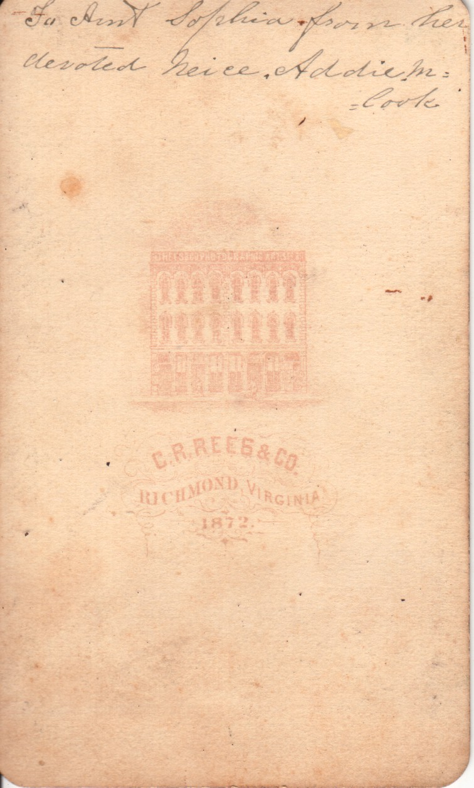
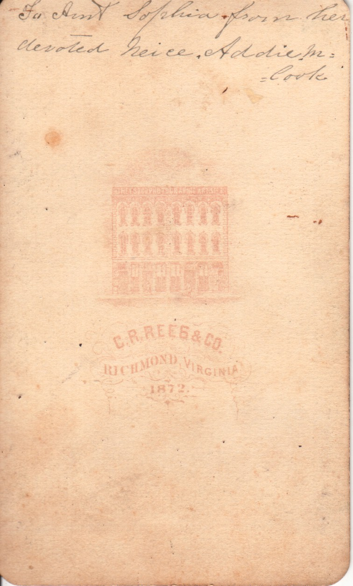

Adelia M. Cook
 

This is a photo of a young woman. On the back it reads "To Aunt Sophia, from her devoted neice Addie M. Cook". On the back it indicates it was taken in Richmond, VA in 1872. It was found among a set of photos in the Coble Family Photo Album. (There are some additional photographs among those identified as having been taken in Richmond, VA that may also be of her.)
Last updated on 6 Oct 2009